Procesamiento del Lenguaje de Signos Fundamentos, tecnologías y retos actuales
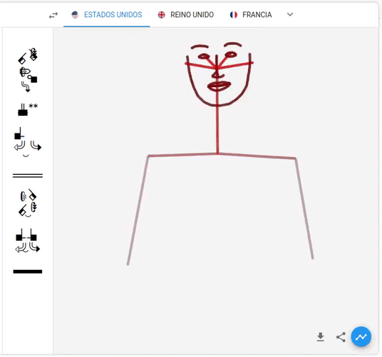
Claudio B. Apellido, J. Antonio Rodríguez, Julián M. Apellido, Víctor Ramos
Fuente Ppal: [Including Signed Languages in Natural Language Processing](https://aclanthology.org/2021.acl-long.570) (Yin et al., ACL 2021)
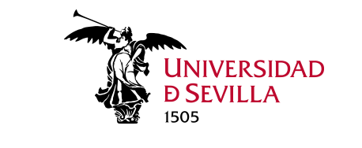
Procesamiento del Lenguaje Natural - Máster en Lógica Computación e Inteligencia Artificial - Universidad de Sevilla
---
## Overview
---
## Overview
1. Fundamentos de la Lengua de Signos.
- Aspectos generales y motivación
- Algunos aspectos lingüísticos
- Métodos de Representación
2. Reconocimiento y traducción
- Tecnologías y modos.
- Detección
- Identificación y Clasificación
- Traducción
3. Producción
- Punto1
- Punto2
- Punto3
- etc.
4. Datasets y Métricas de evaluación
- How2Sign
- PHOENIX2014, AUTSL, WLASL, LSA64
- Problemáticas
- WER, BLEU, ROUGE
5. El futuro de SLR junto a NLP. Conclusiones
---
# Lengua de Signos - Fundamentos
---
## Aspectos generales de las lenguas signadas (I)
* Las lenguas de signos son el principal método de comunicación para las personas sordas.
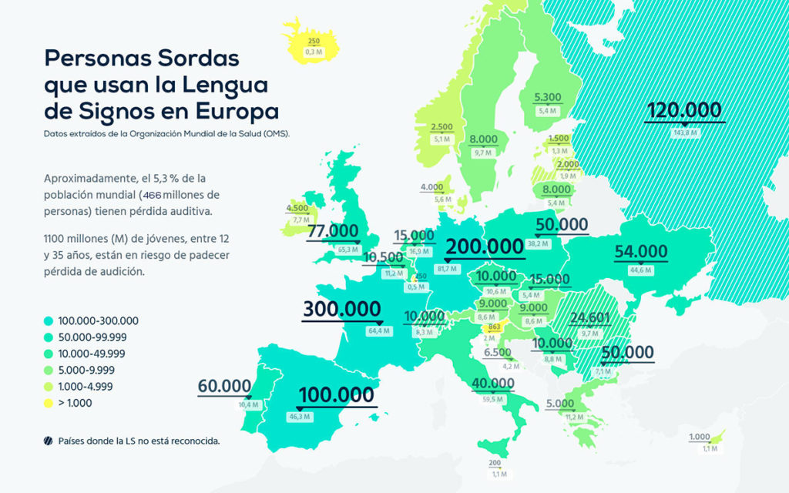
---
## Aspectos generales de las lenguas signadas (II). Mitos (I)
* Existe una única lengua de signos universal, conocida por todas las personas sordas.
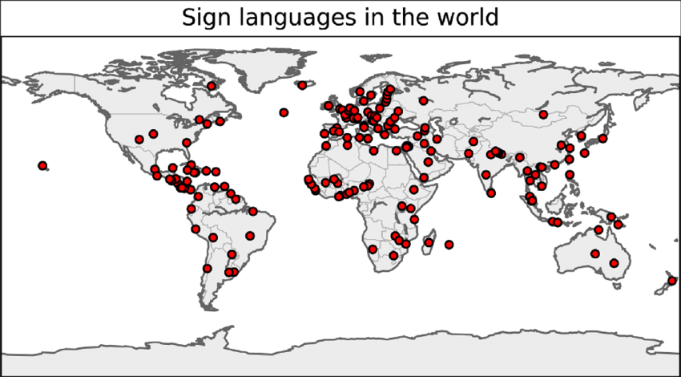 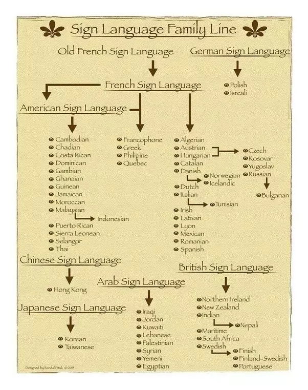
Realidad: [Lista de lenguas de signos (Wikipedia)](https://en.wikipedia.org/wiki/List_of_sign_languages)
---
## Aspectos generales de las lenguas signadas (II). Mitos (II)
* Las lenguas de signos son traducciones letra a letra de cada una de las palabras de un idioma
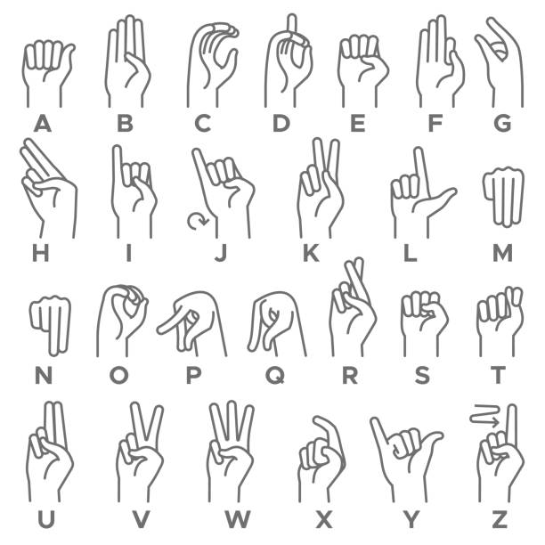 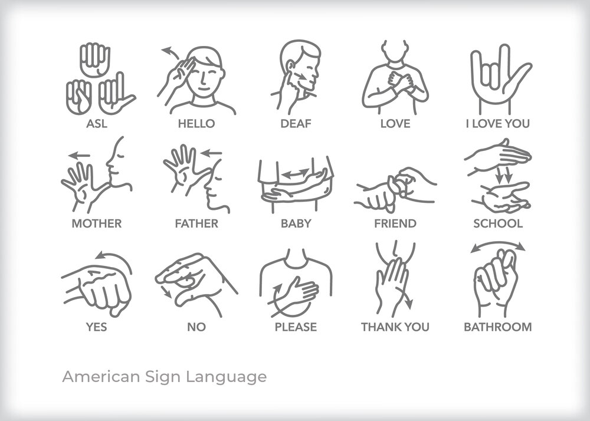
Realidad: Las lenguas de signos son lenguajes naturales completos, que involucran el uso de los gestos, las manos, el cuerpo y el entorno de los signantes.
---
## Aspectos generales de las lenguas signadas (II). Mitos (II)
* Las lenguas de signos son traducciones letra a letra de cada una de las palabras de un idioma
Realidad: Las lenguas de signos son lenguajes naturales completos, que involucran el uso de los gestos, las manos, el cuerpo y el entorno de los signantes.
---
## Linguística de los Lenguajes de Signos
Las lenguas de signos constan de una estructura lingüística completa que cumple con los propósitos comunicativos de todo lenguaje natural.
¡Estructura más complicada que en los lenguajes orales!
* Fonología: concreta las unidades mínimas e incluye gestos manuales y no manuales, movimientos, etc.
---
## Linguística de los Lenguajes de Signos
Las lenguas de signos constan de una estructura lingüística completa que cumple con los propósitos comunicativos de todo lenguaje natural.
¡Estructura más complicada que en los lenguajes orales!
* Fonología: concreta las unidades mínimas e incluye gestos manuales y no manuales, movimientos, etc.
CASA vs TASA
---
## Linguística de los Lenguajes de Signos
Las lenguas de signos constan de una estructura lingüística completa que cumple con los propósitos comunicativos de todo lenguaje natural.
¡Estructura más complicada que en los lenguajes orales!
* Fonología: concreta las unidades mínimas e incluye gestos manuales y no manuales, movimientos, etc.
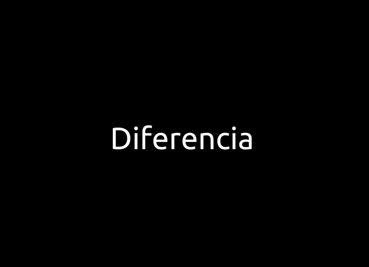
---
## Linguística de los Lenguajes de Signos
Las lenguas de signos constan de una estructura lingüística completa que cumple con los propósitos comunicativos de todo lenguaje natural.
¡Estructura más complicada que en los lenguajes orales!
* Fonología: concreta las unidades mínimas e incluye gestos manuales y no manuales, movimientos, etc.
---
## Linguística de los Lenguajes de Signos
Las lenguas de signos constan de una estructura lingüística completa que cumple con los propósitos comunicativos de todo lenguaje natural.
¡Estructura más complicada que en los lenguajes orales!
* Fonología/Morfología: concreta las unidades mínimas e incluye gestos manuales y no manuales, movimientos, ... y también el Deletreo con los dedos
* Sintáxis: En cada lengua de signos la sintáxis puede variar o incluso tener varias estructuras correctas. Especial relevancia : Simultaneidad
YO NO TERMINAR LA PELÍCULA
POR TI, PERRO MARRÓN YO RECOGER
* Semántica: Establece el significado de los símbolos pero también posibles intenciones, emociones, etc. Aspecto clave: Referencias
---
## Linguística de los Lenguajes de Signos (II). Algunos aspectos clave.
Recursos disponibles: Diccionarios, Símbolos aislados, Deletreo manual, Signos continuos.
Un problema añadido: Anonimización
---
## Objetivos en SLP (I). Lo que tenemos...
---
## Objetivos en SLP (II). ¿Sueño o realidad?
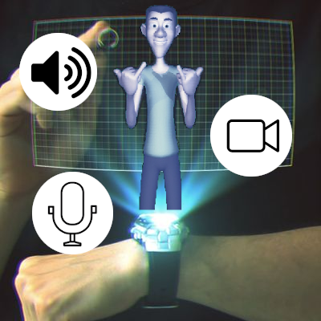 [AR + SLP for Deaf People Education](https://www.semanticscholar.org/paper/Holographic-Signing-Avatars-for-Deaf-Education-Adamo-Villani-Anasingaraju/eddfd490d4f86d60ce32cdc7d2742aeb8a6e8f4b)
---
## Objetivos en SLP (II). ¿Sueño o realidad?
[AR + SLP for Deaf People Education](https://www.semanticscholar.org/paper/Holographic-Signing-Avatars-for-Deaf-Education-Adamo-Villani-Anasingaraju/eddfd490d4f86d60ce32cdc7d2742aeb8a6e8f4b)
**¿Qué requeriría por parte de SLP?**
* Reconocimiento del lenguaje.
* Traducción Oral-Signado.
* Generación con Avatares.
---
# Tareas en Lenguas de Signos I. Reconocimiento y traducción
---
## Reconocimiento (SLR)
Tarea de reconocer los propios elementos discretos del lenguaje de signos, que incluye todo el proceso de seguimiento e identificación
de los signos realizados y su conversión en palabras y expresiones semánticamente significativas.
* Tecnología: Aproximaciones basadas sólo en imagen (con uso exclusivo de cámaras y procesamiento basado en Visión por Computador) / Aproximaciones basadas en multi-sensores (se cuenta con componentes adicionales: guantes, acelerómetros,... procesando la información de forma conjunta).
* Objetivo: Reconocimiento aislado (reconocimiento de cada uno de los símbolos por separado) / Reconocimiento continuo (la detección y clasificación se realiza a partir de varios símbolos a través del tiempo).
---
## Reconocimiento. Métodos basados en visión por computador (VBA).
* Vídeo como fuente para el reconocimiento.
* Desarrollo de modelos y capacidad computacional en visión artificial en la última década: aprovechamiento de la información temporal.
* En general, se preprocesan las imágenes adquiridas para obtener un vector de características y se clasifica según el modelo usado.
---
## Reconocimiento. Reconocimiento Aislado vs Reconocimiento continuo
Actualmente la mayoría de los modelos de reconocimiento se dedican al reconocimiento asilado, eso es, al reconocimiento de cada signo por separado. Varias limitaciones:
* Pérdida del contexto, especialmente grave en el tratamiento de las Referencias
* Problemas de análisis temporal diferenciación de signos por movimiento: Oclusión, Tracking, ...
* Dificultad en el empleo de técnicas basadas en lenguaje en vez de en visión
Nuevas líneas: Análisis continuo. Con gran influencia de técnicas de análisis temporal: Hidden Markov Models (HMM), Dynamic Time Wrapping, Conditional Random Fields (CRF), Support Vector Machines (SVM), Deep Learning (3D-CNN-LSTM, ...)
---
## Detección.
Tarea de clasificación binaria de cualquier fotograma dado de un vídeo que verifica si una persona está utilizando
lenguaje de signos o no.
* Borg y Camilleri. 2019: Procesamiento de los fotogramas en bruto basado en redes convolucionales.
* Moryossef et al. 2020: Detección a partir de la pose estimada y no del fotograma en bruto.
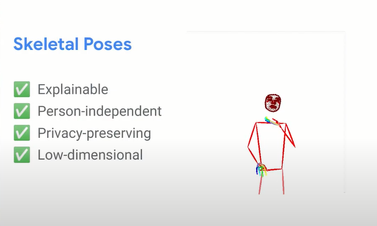
Problema: Insuficientes datasets correctamente anotados para evaluación de datos reales.
---
## Identificación.
La tarea de identificación de lenguas de signos se define como la clasificación entre dos o más lenguas de signos.
* Gebre, Wittenburg y Heskes.2013: un clasificador random forest simple puede distinguir entre la lengua de signos británica (BSL) y la lengua de signos griega(ENN) con F1 del 95%.
* Monteiro et al. 2016: Misma arquitectura. Diferencia entre la lengua de signos británica y la lengua de signos francesa con F1 de 98% de en vídeos con fondos estáticos, y entre la lengua de signos americana y británica con un 70%.
Atribuyen su éxito principalmente a los diferentes sistemas de deletreo con los dedos, que es a dos manos en el caso británico y a una mano en el caso estadounidense.
---
## Segmentación.
Detección de los límites de los signos en un fotograma u oraciones para dividirlos en unidades lingüísticas con significado.
* Lenguaje hablado: División en el tiempo como secuencia lineal.
¡Simultaneaidad del lenguaje signado!
* Lenguaje signado: Concepto de palabra difuso. Aproximación lineal insuficiente.
* Farag y Brock. 2019: Detección de los límites de las palabras dentro de expresiones en el lenguaje de signos japonés a partir de las posiciones tridimensionales de las articulaciones del cuerpo.
* Bull, Gouiffès y Braffort. 2020: Segmentación de lengua de signos francesa que han sido correctamente subtitulados a partir de la alienación de los mismo.
---
## Segmentación.
* Gül Varol et al. 2021:Mejoran las métricas obtenidas por Farag y Brock con una arquitectura que acopla una red convolucional espacio-temporal 3D (I3D) con una red convolucional temporal multietapa (1D).
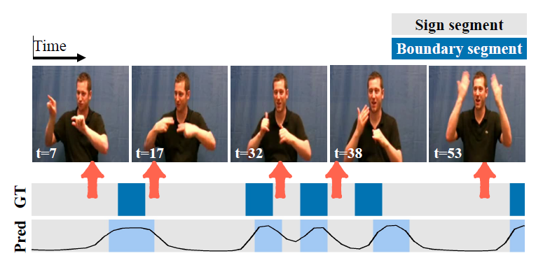
Fuente: Gül Varol et al. 2021
---
## Framework general.
El reconocimiento del lenguaje de signos consta de tres fases principales:
* Segmentación de imagen y seguimiento.
* Extracción de características.
* Clasificación.
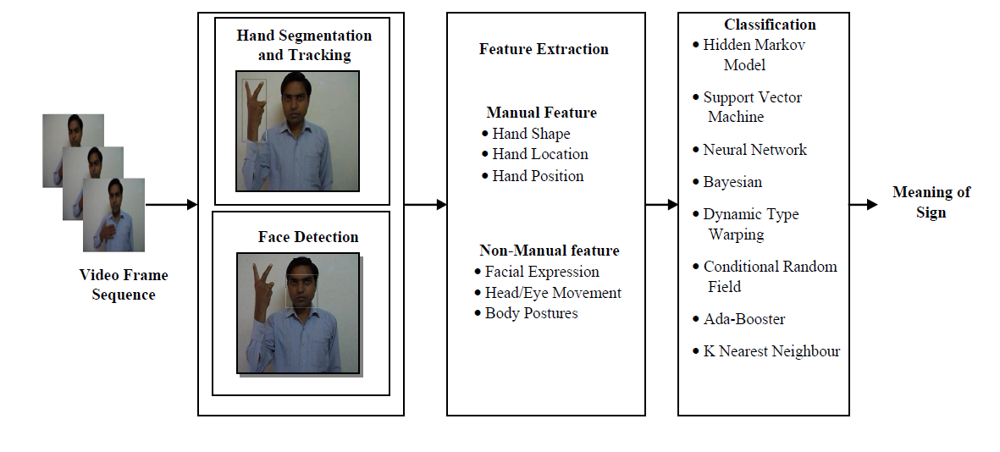
Fuente: Subhash Chand Agrawal et al. 2016
---
## Procesamiento de características.
Las técnicas de preprocesamiento se aplican a una imagen de entrada para eliminar el ruido no deseado y también mejorar la calidad.
* Técnicas de mejora: ecualización del histograma (HE), la ecualización adaptativa del histograma (AHE), la ecualización adaptativa del histograma con contraste limitado (CLAHE) y la transformación logarítmica.
* Técnicas de restauración: filtro mediano, el filtro medio, el filtro gaussiano, el filtro adaptativo y el filtro Wiener.
---
## Procesamiento de características. Segmentación de imagen
Proceso de dividir una imagen en regiones significativas llamadas segmentos.
* Contextual: relaciones entre las características de la imagen, como los bordes, las intensidades similares y la proximidad espacial.
* No contextual: ignora relaciones espaciales. Agrupa los píxeles basándose en el valor de los atributos globales.
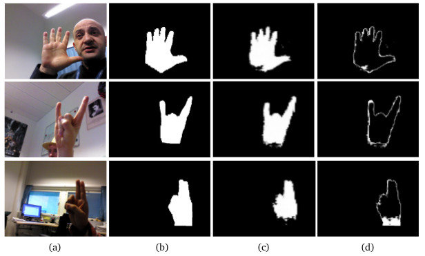
---
## Procesamiento de características. Extracción de características.
Forma de reducción dimensional que representa eficazmente las partes interesantes de una imagen.
* Se extrae un vector de características compacto eliminando una parte irrelevante para aumentar la precisión del aprendizaje y mejorar la visibilidad del resultado.
* Las características extraídas de la región interesada se caracterizan por ser de color, textura, forma, etc.
* Técnicas importantes usadas en SLR: PCA, FD, HOG, SIFT, SURF
---
## Clasificación y predicción.
Las técnicas de inteligencia artificial utilizadas para el reconocimiento del lenguaje de signos incluyen el supervisado y el no supervisado.
* Predictores inteligentes más utilizados para el reconocimiento del lenguaje de signos:
* Vecino más cercano (KNN).
* Red neuronal artificial (ANN).
* Supported Vector Machine (SVM).
* Modelo de Markov oculto (HMM).
* Red neuronal convolucional (CNN),
* Lógica difusa.
---
## Traducción
La RAE lo define como: Acción y efecto de expresar en una lengua lo que está escrito o se ha expresado antes en otra.
* En el contexto SLP: tarea de conversión del lenguajes de signos interpretados a otros lenguajes, no necesariamente de signos.
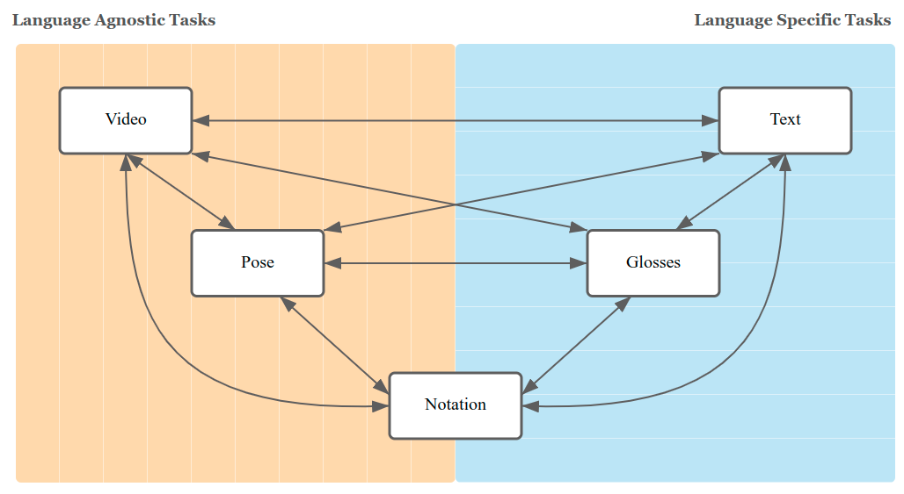
Fuente: [https://sign-language-processing.github.io/](Sign Language Processing)
---
## Traducción automática (MT)
* Invisibilización de la importancia del lenguaje de signos.
* Planteamiento muy diferente al habitual, pues trabajamos con vídeos en lugar de con audio o texto escrito.
Actualmente los modelos que mejores resultados obtienen provienen de técnicas hibrídas entre los dos campos de gran desarrollo actualmente : Visión y PLN. **¡ÉSTE ES EL FUTURO DEL CAMPO!**
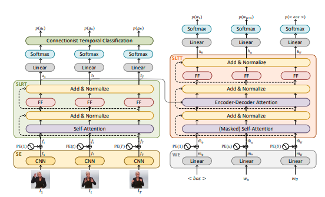
Fuente: [Sign language transformers](https://openaccess.thecvf.com/content_CVPR_2020/papers/Camgoz_Sign_Language_Transformers_Joint_End-to-End_Sign_Language_Recognition_and_Translation_CVPR_2020_paper.pdf)
---
## Traducción: glosa a texto
Tarea que busca convertir glosa escrita en lenguaje natural escrito.
* Difieren tanto en la terminología como en la estructura.
* Ejemplo en ASL: inversión Sujeto-Verbo-Objeto (SVO), pasando a ser Objeto-Sujeto-Verbo (OSV).
Glosa
Texto
PRONOMBRE-2 SABER SIGNAR
→
¿Sabes hablar lenguaje de signos?
* Cihan Camgöz et al. 2018 Comparan arquitercutas LTSM (Long short-term memory) y GRU (gated recurrent unit) junto con mecanismos de atención.
* Yin y Read. 2020 Siguiendo los avances en materia de traducción automática del lenguaje hablado, propusieron cambiar la red neuronal con un transformador mostrando mejoras con respecto a trabajos previos tanto en lenguaje de signos alemán, como en el ASL.
---
## Traducción: texto a glosa
* Zhao et al. 2000 Sistema basado en gramáticas de adjunción de árboles (TAG) para traducir frases en inglés a ASL.
* Se genera un árbol de glosas para el ASL.
* Empareja los árboles elementales del ASL con los árboles elementales del inglés.
* Se realizan sustituciones y combinaciones de nodos.
* Primera ocasión en la que se pudo ver TAG aplicado a un lenguaje de signos.
* Othman y Jemni. 2012 Identificaron la necesidad existente de un corpus paralelo de glosa y texto de una dimensiones elevadas. Diseñaron una gramática con el objetivo de convertir frases en inglés a glosa del ASL.
* 100 millones de frases sintéticas.
* 800 millones de palabras.
* Difícil medir la calidad del corpus, dado que no se llegó a evaluar el método de producción en parejas reales inglés-ASL.
---
## Traducción: vídeo a texto
* Camgöz et al. 2020b
* Proponen arquitectura basada en transformadores que codifican cada fotograma.
* Usa referencias tanto de glosas como de texto.
* Usan un trasformador para decodificar el lenguaje hablado.
* Camgöz et al. 2020a
* Arquitectura que no depende de las glosas.
* Recorta la mano y cara del signante y estiman la pose 3D mediante transformadores.
---
## Traducción: vídeo a pose
* OpenPose Primer sistema capaz de reconocer, conjuntamente, las posiciones clave de los cuerpos, caras, manos y pies.
* 135 ubicaciones en 2D en cada imagen.
* Puede estimar la pose directamente a partir de una única inferencia.
* Se estima la pose del cuerpo e independientemente de las manos y de la cara.
* Capaz de triangular otras posiciones clave dados diferentes ángulos de grabación, siendo capaz de reconstruir la pose en 3D.
* DensePose
* Sustituyen la clasificación de cada posición clave por una segmentación semántica según la parte del cuerpo.
* Predice si dicho píxel puede ubicarse en una proyección 2D del modelo.
* Reconstrucción a cuerpo completo.
* No tiene en cuenta la información temporal del movimiento. Problema con el desenfoque (blur).
---
## Traducción: vídeo a pose
* MediaPipe Holistic.
* Aproximación semejante a la de OpenPose.
* Poses estimadas eran tridimensionales.
* Capaz de ejecutarse a tiempo real en una CPU.
* Disponible para Android, iOS, C++, Pythony es ampliamente utilizada.
Fuente: Holistic
---
## Traducción: estado del arte
* VAC (Visual Alignment Constraint for Continuous Sign Language Recognition).
* Dos funciones de pérdida, una centrada en características visuales, y otra dedicada para el módulo de alineación.
---
## Traducción: estado del arte
* TSPNet (Hierarchical Feature Learning via Temporal Semantic Pyramid for Sign Language Translation).
* Consideran información temporal como añadido de cara al entrenamiento frente tratamiento frame a frame.
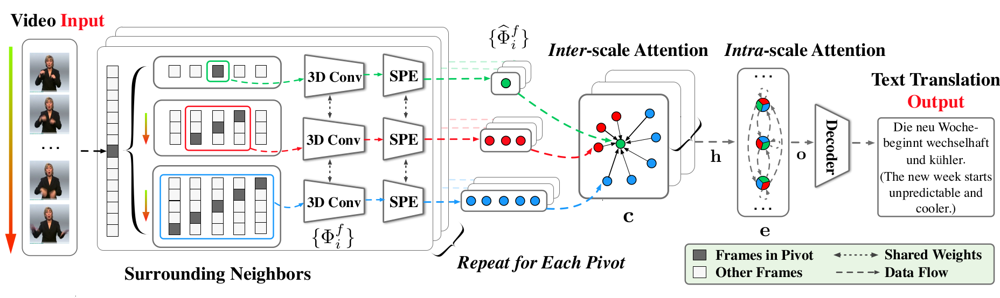
---
## Traducción: estado del arte
* SAM-SLR (Skeleton Aware Multi-modal Sign Language Recognition).
* Se centra en la complejidad y la rapidez de los movimientos realizados por una persona signando.
* Redes convolucionales para extraer las posiciones principales de las manos.
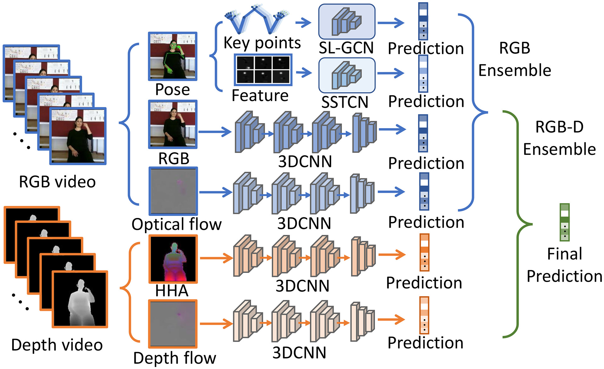
---
# Tareas en Lenguas de Signos III. Producción.
---
## Objetivo
Lograr la traducción de un lenguaje fuente, ya sea en modalidad escrita, hablada o visual
(en caso de otros lenguajes de signos) a un flujo contínuo de lenguaje de signos en un nivel
comparable al de un traductor humano.
Existen diferentes técnicas, pero generalmente se reduce al uso de alguna representación humana
a modo de un avatar. La forma de formar este avatar difiere, pudiendo generarse en base a
animaciones predefinidas por glosa, accediendo directamente al esqueleto, o incluso la Generación
completa del video sin utilizar un modelo 3D.
---
## Retos
Tanto el reconocimiento como la producción de signos deben enfrentar retos críticos. Uno de ellos es
la variabilidad visual de los signos, la cual es dependiente de la forma de las manos, orientación de las
palmas, movimiento, locación, expresiones faciales y otras señales no manuales.
Otro reto es el desarrollo de un sistema de SLP fotorrealista para generar el signo, palabra u oración
correspondientes en base a un texto o voz en lenguaje hablado dentro de una situación del mundo real.
La traducción desde lenguaje hablado a lenguaje de señas tomando en cuenta las reglas gramaticales
y estructuras linguísticas del SL es un problema muy complejo. No se trata de un problema de mapeo
entre texto/voz a signos palabra por palabra, el problema surge de las diferencias entre la tokenización
y el orden de las palabras en cada lenguaje.
---
## Modalidades de Input
* Visión
En el caso de la visión, suelen utilizarse datos en formato RGB y esqueletos.
Los datos RGB pueden ser imágenes o videos en alta resolución.
* Linguística
Comúnmente texto. El texto es procesado usando diferentes modelos de reconocimiento.
es fundamental especializar el sistema en un dominio en particular.
Para no comenzar desde cero, se suele utilizar transfer learning.
---
## Modelos Propuestos: Avatar
* Qué son
Técnica para mostrar una conversación de signos sin utilizar un humano, normalmente
utilizando modelos 3D animados, los cuales se pueden almacenar de manera más eficiente que videos.
Estos modelos pueden replicar el movimiento de los dedos, manos, gestos faciales y movimiento corporal.
También se puede programar para ser utilizado en conjunto con diferentes lenguajes de signos
* Cómo producirlos
Para formar cada movimiento del avatar, es necesaria información de captura de movimiento y glosas
parametrizadas.
* No son muy aceptados en la comunidad sorda
---
## Modelos Propuestos: Motion Graph
Motion Graph (MG) es un método de computación gráfica para animar personajes dinámicamente.
Se define como un grafo dirigido construido a base de datos de captura de movimiento.Motion Graph (MG) es un método de computación gráfica para animar personajes dinámicamente. Se define como un grafo dirigido construido a base de datos de captura de movimiento.
Mediante un cálculo de la diferencia entre dos grafos o poses deseadas, se puede generar
la transición del modelo entre ellas.
---
## Modelos Propuestos: NMT
Las NMT son modelos que utilizan redes neuronales para predecir la probabilidad de una secuencia de palabras,
típicamente modelando oraciones completas en un modelo integrado.
Principal ejemplo creado en base a esta técnica es Text2Sign.
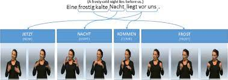
---
## Modelos Propuestos: Generación de Imagen/Video
Utilizando técnicas generativas de deep learning, con arquitecturas de redes neuronales en forma de
variable auto-encoders (VAEs) y generative adversarial networks (GANs), se pueden dejar de lado algunos
pasos de diseño y generar directamente un video.
Fuente: [https://sign.mt/](https://sign.mt/)
---
## Datasets más frecuentes
Destacamos primeramente la labor de Duarte et al.:
---
## Datasets más frecuentes
* RWTH-PHOENIX-Weather 2014 (Continuous Sign Language Recognition Dataset)
y 2014 T (Parallel Corpus of Sign Language Video, Gloss and Translation).
* Diseñados por Koller et al. y Camgöz et al.
* Generados a partir de noticieros diarios entre 2009 y 2011.
* Lenguaje de signos alemán (GSL).
* Canal de televisión pública PHOENIX.
* Transcripción mixta, combinando automática (RASR) con trabajo de nativos del GSL.
* Completado con alemán hablado para capturar la variabilidad de la traducción.
* 2014 T incluye anotaciones originales entre otro contenido.
---
## Datasets más frecuentes
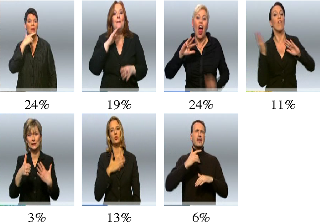
Ejemplo de contenido de PHOENIX 2014. Porcentajes según tiempo en pantalla.
---
## Datasets más frecuentes
* AUTSL (A Large Scale Multi-Modal Turkish Sign Language Dataset and Baseline).
* Diseñado por Sincan y Keles.
* Lenguaje de signos turco (TSL).
* Objetivo: proporcionar un punto de partida desafiante.
* 226 signos interpretados por 43 signantes diferentes.
* 38.336 muestras aisladas de signos.
* Complejidad: diferentes fondos, posiciones y posturas.
* Información: RGB, profundidad y pose.
* ~95% de precisión en AUTSL y Montalbano, pasando a ~60% en AUTSL para una subselección.
---
## Datasets más frecuentes
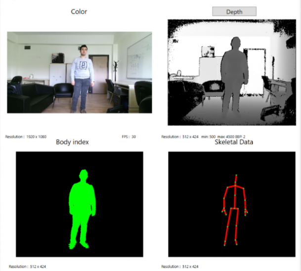
Información disponible en AUTSL.
---
## Datasets más frecuentes
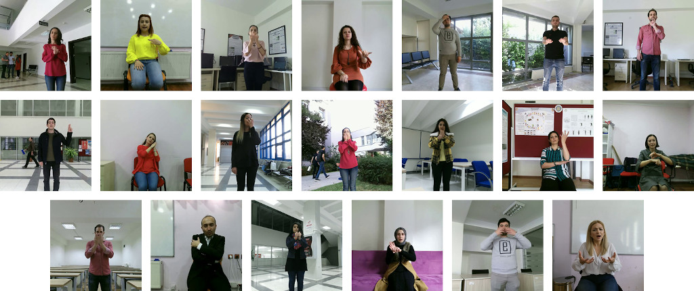
Variación de intérpretes y fondos.
---
## Datasets más frecuentes
* WLASL-2000 (Word-level Deep Sign Language Recognition from Video: A New
Large-scale Dataset and Methods Comparison).
* ASL.
* 2.000 palabras diferentes comunes.
* Facilitar investigación y facilitar comunicación sordos-oyentes.
* LSA64 (LSA64: A Dataset for Argentinian Sign Language).
* Lenguaje de signos argentino (LSA).
* 3.200 vídeos.
* 10 intérpretes no expertos ejecutan cada uno 5 repeticiones de 64 tipos de signos.
* Incluye verbos y sustantivos comunes
---
## Datasets más frecuentes: problemáticas
* Escasez
---
## Datasets más frecuentes: problemáticas
* Escasez
* Incompletitud
---
## Datasets más frecuentes: problemáticas
* Escasez
* Incompletitud
* Incompatibilidad
---
## Datasets más frecuentes: problemáticas
* Escasez
* Incompletitud
* Incompatibilidad
* Anonimato
---
## Métricas utilizadas
Destacamos ahora algunas de las métricas más comúnmente empleadas al tratar con lenguajes de signos, especialmente de cara a la traducción.
* WER, Word Error Rate
* BLEU
* ROUGE
---
## Métricas utilizadas: WER
WER, Word Error Rate considera el número mínimo de inserciones, borrados y sustituciones de una palabra por otra, necesarios
para transformar una frase en otra. Esta medida se basa en la distancia de edición o distancia de
Levenshtein, pasando del nivel de letra al de palabra.
Es empleada principalmente en reconocimiento y traducción automáticos, comparando una frase sintética con una de referencia correcta.
---
## Métricas utilizadas: WER
* S es el número de sustituciones,
* B es el número de borrados,
* I es el número de inserciones,
* N es el número de palabras que tiene la frase de referencia.
---
## Métricas utilizadas: WER
Ejemplo para calcular la métrica WER.
---
## Métricas utilizadas: BLEU-n
BLEU (Bilingual Evaluation Understudy) es un método de evaluación de la calidad de traducciones
realizadas por sistemas de traducción automática.
* Mide la calidad al comparar la semejanza con una frase de referencia, supuesta correcta.
* Admite varias frases de referencia al mismo tiempo.
* Adaptación de la precisión en n-gramas.
* Diseñada para analizar traducciones, pero ampliable para evaluar texto sintético.
---
## Métricas utilizadas: BLEU-n
Partimos de la precisión simple de n-gramas:
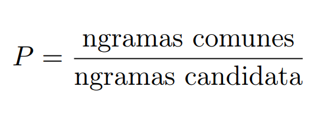
Veamos un ejemplo:
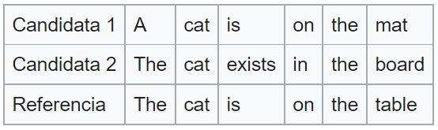
---
## Métricas utilizadas: BLEU-n
En esencia BLEU ~ media geométrica de precisiones.
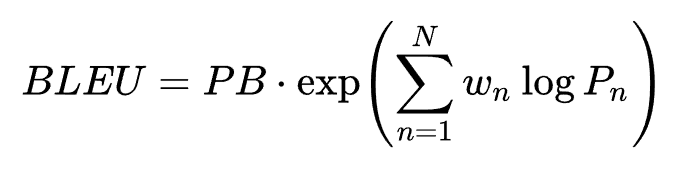
donde PB es la precisión modificada penalizada por brevedad (considérese "the the" vs. la frase anterior).
---
## Métricas utilizadas: ROUGE
ROUGE (Recall-Oriented Understudy for Gisting Evaluation) difiere de la medida BLEU en la memoria:
cuánto del documento de referencia el sistema es capaz de recuperar o capturar
* Empleado habitualmente para medir la calidad de un resumen y en traducción automática.
* Especialmente útil con resúmenes, donde es más importante evaluar en dichos casos el número de palabras que el modelo es capaz de recordar.
---
## Métricas utilizadas: ROUGE
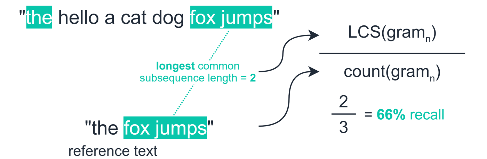
Muestra para calcular la métrica ROUGE.
---
## Métricas utilizadas: ROUGE
Variaciones dentro de ROUGE, todas comparando el sistema con los documentos de referencia:
* ROUGE-N: Superposición de ngramas.
* ROUGE-1 contempla el solapamiento de los unigramas, esto es, las palabras individuales.
* ROUGE-2 trabaja con digramas.
* ROUGE-L: Recurre al concepto de Mayor Subsecuencia Común (LCS).
* ROUGE-W: Versión ponderada de ROUGE-L.
* ROUGE-S: Trabaja con digramas con salto, es decir, parejas de palabras respetando el orden.
* ROUGE-SU: Combina los digramas de salto con relaciones entre unigramas.
---
# Futuro del SLP y conclusiones
---
## Inclusión de SLP en el marco NLP
Aunque las lenguas de signos y las habladas difieren en cuanto a la modalidad, dado que ambas expresan los niveles linguísticos propios de los lenguajes naturales, las teorías fundamentales en NLP pueden y deben extenderse a las lenguas de signos.
* Herramientas de NLP:
* Tokenizadores.
* Analizadores sintacticos.
* Reconocimiento de entidades nombradas.
* Resolución de correferencia.
---
## Inclusión de SLP en el marco NLP
* Tokenizadores
* La gran mayoría de los métodos de PLN requieren una entrada discreta (token).
* Necesidad de herramientas de tokenización adecuadas que mapeen los vídeos de las lenguas de signos a una representación discreta y precisa con una mínima pérdida de información.
* Los sistemas y conjuntos de datos de PLN existentes suelen utilizar glosas como unidades léxicas discretas. Problemas:
* Insuficientes para las construcciones espaciales de la lengua de signos.
* Glosas específicas de cada lengua, no estandarizadas.
Preguntas abiertas:
- ¿Cómo definimos las unidades léxicas en las lenguas de signos?
- ¿Las unidades fonológicas de las lenguas de signos pueden asignarse a unidades léxicas?
- ¿Pueden las técnicas utilizadas en *Speech Recognition* ser aplicadas las lenguas de signos?
---
## Inclusión de SLP en el marco NLP
* Analizadores sintácticos
* El etiquetado de partes del discurso (PDD) y el análisis sintáctico son fundamentales para comprender el significado de las palabras en contexto.
* Se debe definir en qué medida el etiquetado PDD y el análisis sintáctico para los idiomas hablados también se generalizan a los lenguajes de signos.
Preguntas abiertas:
- ¿Existen teorías lingüísticas para diseñar características y reglas que realicen estas tareas?
- ¿Cómo se expresan las características morfológicas?
- ¿Necesitamos un nuevo conjunto de etiquetas y PDD para los lenguajes de signos?
---
## Inclusión de SLP en el marco NLP
* Reconocimiento de entidades nombradas
* Las entidades nombradas en los lenguajes de señas pueden producirse mediante una secuencia de deletreo manual, un signo o incluso mediante la pronunciación del nombre mientras que la referencia es señalanda..
* Un detalle importante: **La Anonimización**.
Preguntas abiertas:
- ¿Cuáles son los marcadores visuales de las entidades nombradas?
- ¿Cómo se presentan y referencian?
- ¿Cómo se establecen las relaciones entre ellos?
---
## Hacia una PNL lingüísticamente informada y multimodal
Es necesaria la colaboración de las comunidades de investigación multimodal y de SLP para desarrollar modelos potentes de SLP apoyados herramientas básicas de PLN como las comentadas, todo ello mientras se procesa y relaciona la información procedente de las modalidades lingüística y visual
El SLP está especialmente sujeta a tres de los principales retos técnicos en el aprendizaje automático multimodal:
Puntos clave:
* Traducción: ¿cómo pasar la información visual-gestual a/desde la información oral-textual?
* alineación: ¿cómo relacionar las unidades de la lengua de signos con las de la lengua hablada?
* co-aprendizaje: ¿cómo aprovechar el conocimiento de la lengua hablada en la lengua de signos?
Procesamiento del Lenguaje de Signos Fundamentos, tecnologías y retos actuales
Claudio B. Apellido, J. Antonio Rodríguez, Julián M. Apellido, Víctor Ramos
Fuente Ppal: [Including Signed Languages in Natural Language Processing](https://aclanthology.org/2021.acl-long.570) (Yin et al., ACL 2021)

 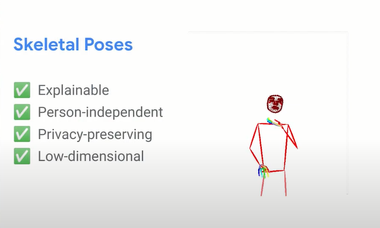
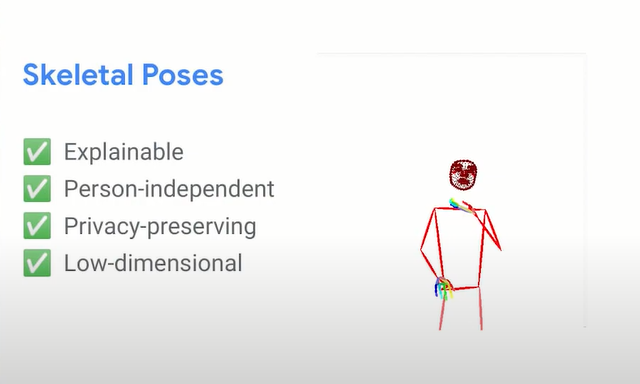


 * S es el número de sustituciones,
* B es el número de borrados,
* I es el número de inserciones,
* N es el número de palabras que tiene la frase de referencia.
---
## Métricas utilizadas: WER
* S es el número de sustituciones,
* B es el número de borrados,
* I es el número de inserciones,
* N es el número de palabras que tiene la frase de referencia.
---
## Métricas utilizadas: WER